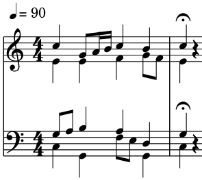

A standard chorale is sung in 4-part harmony with 4 voices.
| Voice |
Range |
Function |
| Soprano |
Highest |
Contrary motion, melody |
| Alto |
High |
Static harmony |
| Tenor |
Low |
Static harmony, close to alto |
| Bass |
Lowest |
Chord root or inversion |
Do:
- Write static alto and tenor parts - move by step or do not move.
- Keep the tenor part close to alto and far from bass.
Don't:
- Write large gaps between the soprano and alto parts.
- Write large gaps between the alto and tenor parts.
- Write overlap between voices - the order SATB should be kept from top to bottom.
- Jump an augmented interval in any part.
- Write parallel fifths or octaves between any two parts.
Chords
- In primary triads (
I, IV, V):
- Always include the tonic and third of a chord.
- Try to double the tonic and have one 3rd and 5th - it is always acceptable to double the tonic.
- Alternatively, doubling the 5th is possible.
- Doubling the 3rd is forbidden in major chords.
- Doubling the leading tone of a key is forbidden in any chord.
- In secondary chords:
ii, ii°
- Use primarily in first inversion. Root position is acceptable.
ii - doubling the 3rd is allowed but not necessary.ii° - diminished, the 3rd MUST be doubled.
iii
- Use primarily in root position. First inversion is acceptable.
- Mediant chords must not be used in a minor key.
- Use in the progression
I-III-IV-V.
vi, ♭VI
- Use only in root position.
- In a minor key, must double the 3rd of VI (tonic of the key).
vii°, ♭VII
- Use only in first inversion.
- Must double the 3rd regardless of key.
Stylistic writing
- Aim for contrary motion against soprano at all times.
- Keep the rhythm incessantly driving forward - use 8th notes.
- The bass part should move a lot, preferably ascending towards the cadence. Large jumps in the bass are acceptable.
- Try to always have at least one voice stick out from the others.
Nonchord tones and dissonances

In the above example, a I-III-IV-V progression is used. Notice how the rhythm never comes to a halt untill the cadence. In this example, all of the nonchord tones are passing tones, linking two 3rds together.
Note: fermata is used to signify a pause on the tonic chord. The singing briefly stops and then continues again.